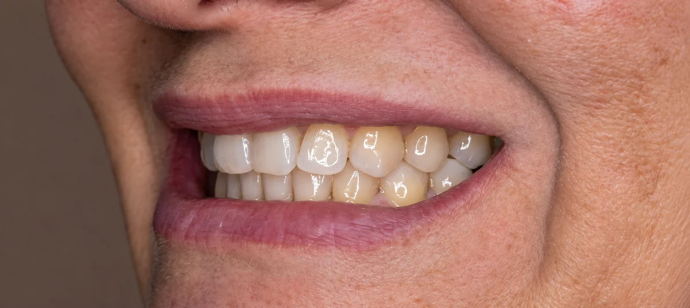
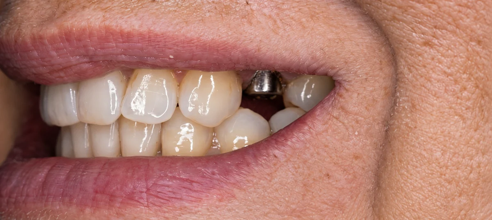
01 REPOSIÇÃO DENTÁRIA
Implante dentário
O espaço deixado pela falta de um dente foi preenchido para devolver continuidade ao sorriso.
CLÍNICA ODONTOLÓGICA
EM ITAQUERA / GUAIANASES
Há mais de 30 anos, cuidamos das famílias de Itaquera com atenção, conversa clara e o tratamento que faz sentido para você.
5,0318 avaliações Encontre o cuidado que você precisaSEU PRIMEIRO PASSO
Conte com a nossa equipe para entender o que seu sorriso precisa.
Responsável técnica: Dra. Elza NaraCRO-SP 72998
CUIDADO PARA DIFERENTES NECESSIDADES
Você entende as opções e escolhe com tranquilidade.
Mais do que
tratamentos,
mais motivos
para sorrir.
UMA CLÍNICA PARA CUIDAR DE VOCÊ
Da prevenção aos cuidados mais específicos, você encontra orientação e tratamento no mesmo lugar.
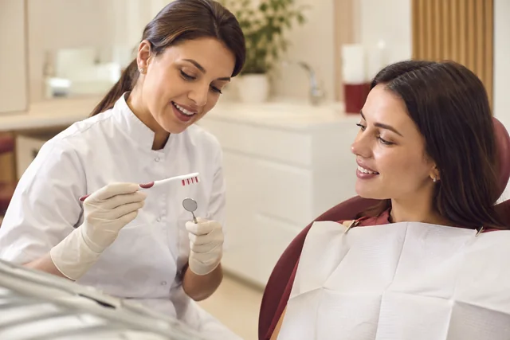
Profilaxia, limpeza profissional e orientação de higiene para prevenir problemas.
Quero saber mais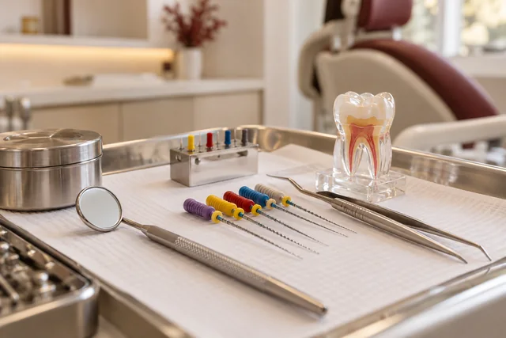
Cuidado com a infecção dentro do dente, com técnica e anestesia focadas no seu conforto.
Quero saber mais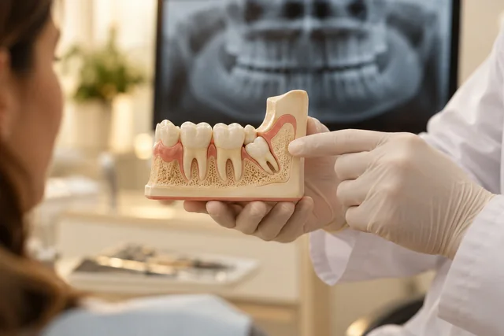
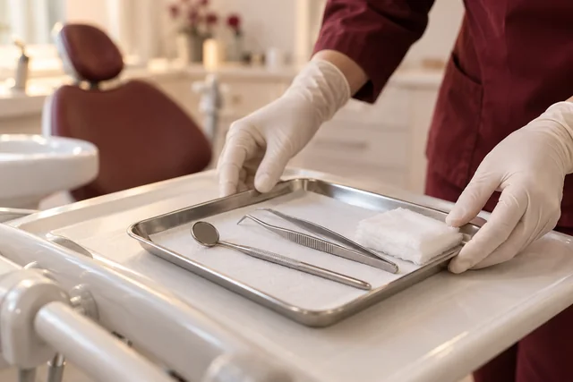
Extrações, biópsias e frenectomias, com indicação e planejamento individual.
Quero saber mais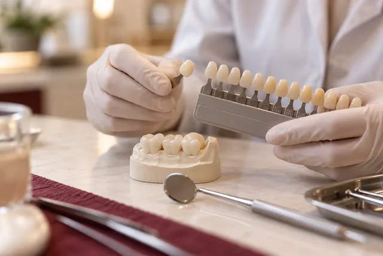
Obturações e reconstruções para tratar cáries e dentes fraturados.
Quero saber mais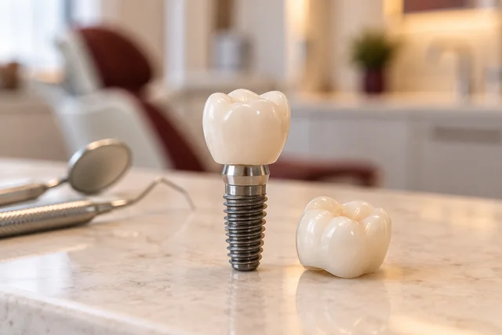
Reposição de dentes perdidos com implantes, conforme o planejamento do seu caso.
Quero saber mais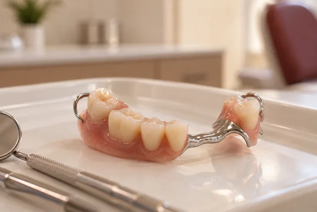
Próteses fixas e removíveis para devolver função e completar o sorriso.
Quero saber mais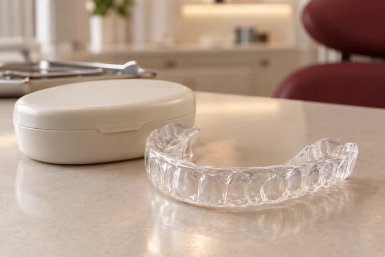
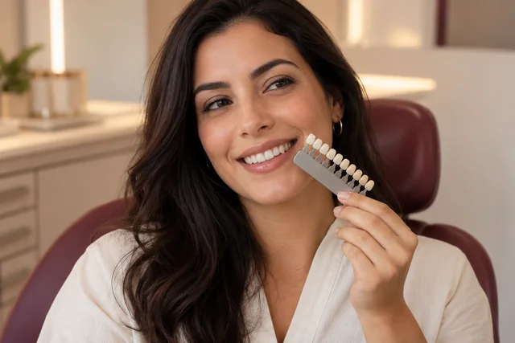
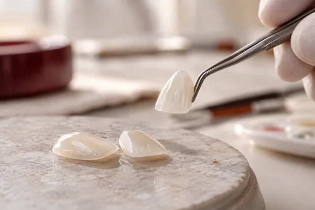
Facetas de porcelana finas para harmonizar a forma e a aparência dos dentes.
Quero saber mais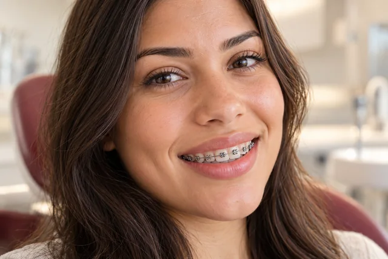
Correção do alinhamento com aparelhos ou alinhadores transparentes.
Quero saber mais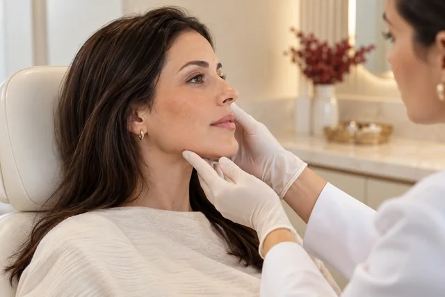
Preenchimentos para harmonizar a região do sorriso, conforme avaliação.
Quero saber maisNão sabe qual cuidado precisa?A gente começa ouvindo você.
Quero uma avaliaçãoCASOS REAIS DA AKO
Cada sorriso tem uma história. Veja como o cuidado pode fazer diferença.
Arraste o dente para comparar.No teclado, use as setas.


01 REPOSIÇÃO DENTÁRIA
O espaço deixado pela falta de um dente foi preenchido para devolver continuidade ao sorriso.
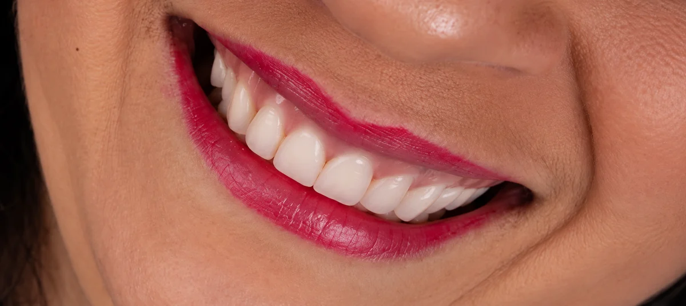
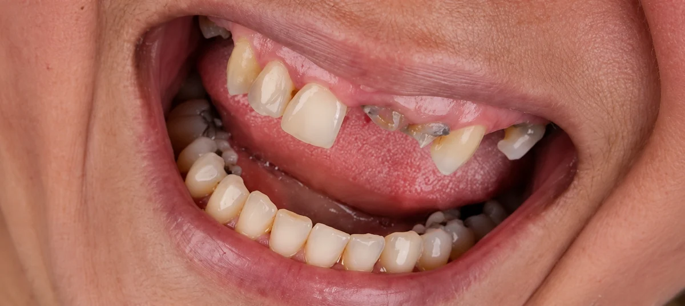
02 RECONSTRUÇÃO
Os dentes anteriores foram reconstruídos, recuperando forma e harmonia ao sorrir.
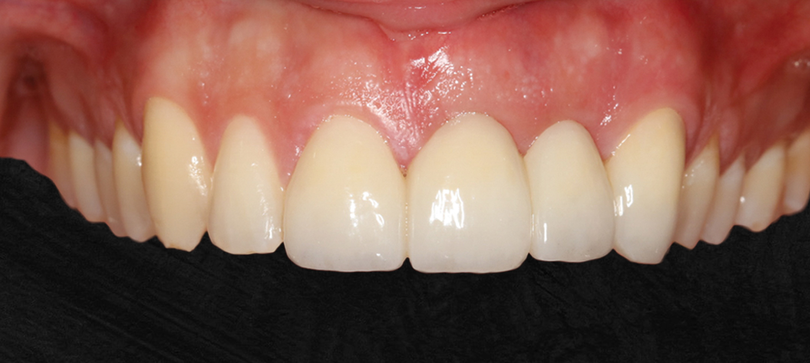
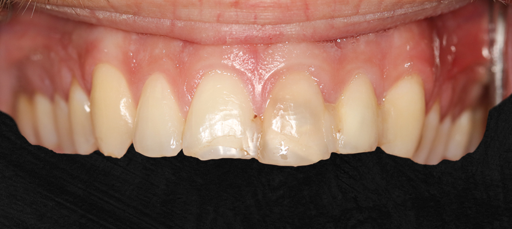
03 PRÓTESE FIXA
Reabilitação dos dentes da frente após uma fratura, com uma ponte dentária.
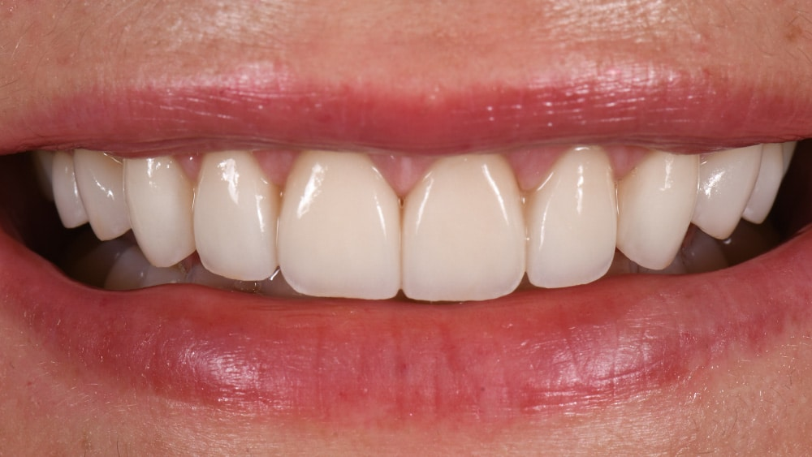
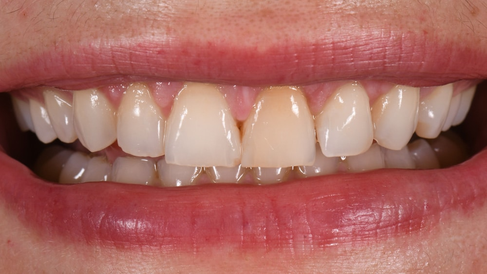
04 ESTÉTICA DO SORRISO
Dez facetas para harmonizar a cor e o formato dos dentes.
O próximo cuidado é com você.Seu tratamento começa com uma avaliação individual.
Quero avaliar meu caso A nossa casa. Aqui em Itaquera.
A nossa casa. Aqui em Itaquera.
PERTO DE VOCÊ, DESDE 1995
Rua Tobias Asser, 12
Jardim Santa Terezinha · Itaquera / Guaianases
Desde 1995, recebemos famílias da Zona Leste com um atendimento próximo, humano e de confiança. Aqui, você é ouvido, entende as opções e faz o tratamento no seu tempo.
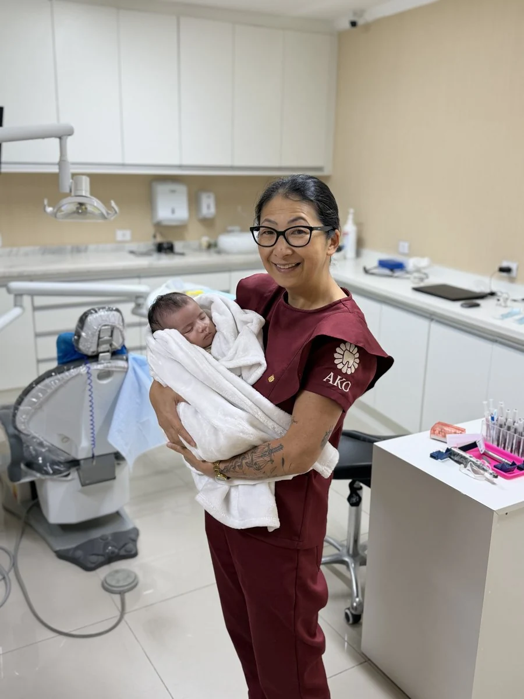
Dra. Elza NaraCRO-SP 72998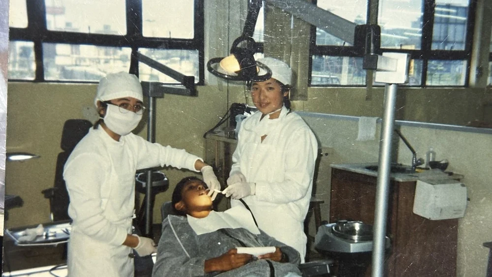
Uma história que começou em 1995.EXPERIÊNCIA QUE ACOLHE
Mais de 30 anos de carreira. E o mesmo compromisso: cuidar de pessoas.
Para a Dra. Elza, cada sorriso faz parte de uma vida. Por isso, o atendimento começa ouvindo: o que incomoda, o que preocupa e o que você espera do tratamento.
A experiência ajuda a encontrar o caminho. A conversa clara ajuda você a decidir. Nossa equipe indica o que realmente faz sentido para o seu caso, com respeito ao seu tempo e às suas escolhas.
Se dá para salvar,
a gente salva.Preservar o seu sorriso também é cuidar.
SEM PRESSA. SEM COMPLICAÇÃO.
Você não precisa saber qual tratamento pedir.
Comece contando
como se sente.
Fale do seu sorriso, dos seus receios e do que gostaria de melhorar.
Avaliamos o seu caso e explicamos as possibilidades, as etapas e os valores.
O plano é combinado com você. Sem empurrar tratamentos de que não precisa.
CONFIANÇA CONSTRUÍDA NO DIA A DIA
Uma clínica que faz parte do bairro e da história de milhares de famílias. Conheça as experiências de quem já passou por aqui.
5,0/ 5O atendimento humanizado faz toda a diferença e me senti muito confortável e segura. Recomendo de olhos fechados!
Não consigo ir em outro lugar, estou com a dra Elza a anos, profissional excelente. Equipe maravilhosa Atendimento perfeito. Super indico
Atendimento excelente, profissional transparente, ágil, muito esclarecedora que passa muita confiança no tratamento e no orçamento proposto.
Meu filho e eu somos pacientes e o cuidado com ele, que tem medo, é incrível. Nota miiil
em minha opinião a melhor dentista que já conheci. Além de que é muito honesta quanto a tudo.
Ótimo atendimento. A equipe é bem atenciosa e a doutora explica tudo bem e faz um bom trabalho.
Uma excelente profissional. Dedicada e super atenciosa com seus pacientes, se preocupa com cada detalhe. Super indico.
Recomendo muito a Ako Odonto, excelentes profissionais e preço justo. A melhor clínica do mercado!
Além de ser uma excelente profissional, é uma pessoa muito atenciosa, gentil e dedicada.
Ela explica cada etapa do tratamento com muita paciência e leveza, eliminando qualquer dúvida, estou muito satisfeita.
a Dra e as meninas do consultório foram super atenciosas e cuidadosas, extremamente profissionais e prestativas, recomendo de olhos fechados.
Acabei de fazer um procedimento de raspagem e gostei muito do atendimento. Ambiente muito acolhedor e convidativo, procedimento rápido e sem dor.
A clínica é maravilhosa, doutora Elza é muito detalhista e atenciosa com tudo, sou cliente a anos e só tenho a elogios.
Um atendimento impecável, são profissionais excelentes, claros e transparentes nos procedimentos. Ambiente muito calmo !!
Excelente atendimento desde a recepção até a Dr Elza . Podem ir sem medo super indico .
Depoimento 01 de 15
Trechos de avaliações reais. Arraste para ver mais.Com o carrossel em foco, use as setas, Home ou End.
CONVERSA CLARA DESDE O INÍCIO
Uma boa decisão começa com informação. Se sua dúvida não está aqui, nossa equipe ajuda você.
Quero conversar sobre meu casoComece por uma avaliação. Você conta o que está incomodando, a equipe examina o seu caso e explica as opções. Não é preciso chegar com um tratamento escolhido.
Sim. Conte esse receio desde o primeiro contato. Explicamos cada etapa, tiramos suas dúvidas e respeitamos seu ritmo, com foco em conforto e acolhimento.
São possibilidades diferentes para substituir dentes. A escolha depende da avaliação, da sua saúde bucal e das suas necessidades. A equipe explica as alternativas e o planejamento indicado para você.
O valor varia conforme o caso e o plano de tratamento. Depois da avaliação, você recebe a explicação das etapas, dos valores e das opções de pagamento, antes de decidir.
Fale com a equipe pelo WhatsApp (11) 96638-5267. Ela verifica a disponibilidade de atendimento e orienta o próximo passo. Atendemos de segunda a sexta, das 9h às 18h, e sábado, das 9h às 13h.
Na Rua Tobias Asser, 12, Jardim Santa Terezinha, na região de Itaquera e Guaianases, São Paulo. É o mesmo endereço onde recebemos famílias do bairro desde 1995.
LOCALIZAÇÃO
Desde 1995 no mesmo endereço, recebendo famílias do Jardim Santa Terezinha e de toda a região de Itaquera e Guaianases.
Gente de diferentes bairros passa por aqui. A conversa começa perto de casa.
O SEU SORRISO MERECE ESSE CUIDADO
A gente escuta, explica e cuida.
Você decide com confiança.